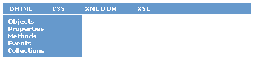

|
| ||
|
| ||
George Young
Microsoft Corporation
May 24, 1999
 Download the source code for this article (zipped, 4.80K)
Download the source code for this article (zipped, 4.80K)
The following article previously appeared in the MSDN Online Voices "Code Corner" column.
In last month's column, we walked through creating a Dynamic HTML (DHTML) Table of Contents (TOC) from an XML file, using XSL, Cascading Style Sheets (CSS), and JScript®. We started with a list of links and associated labels and ended up with a collapsible TOC useful for site navigation.
A number of you wrote in with enthusiasm about the technologies, while saying that what you really wanted was to convert the XML into DHTML menus -- like those at the top of this page -- that are used on the MSDN Online site. In this month's column, we'll do just that -- transforming the XML data into DHTML menus like the ones above, hopefully in the process further illustrating the benefits of presentation abstraction provided by XML.
The code here is not an exact reproduction of the actual menu code used across MSDN Online. If you need to serve up HTML to browsers other than Internet Explorer 4.0 and later, we'll leave the exercise of creating the down-level HTML to you, but the technique used will be the same.

Figure 1. The DHTML menus
If you're reading this with Internet Explorer 4.0 or later, you can view the DHTML Menus.
We'll assume in this month's discussion that you're familiar with the XML and XSL basics covered in last month's column.
Here again is our site navigation data, stored in XML. Since we covered the XML in detail last month, we'll just present the file listing here and move on.
<?xml version="1.0"?>
<?xml:stylesheet type="text/xsl" href="menus.xsl"?>
<TOPICLIST TYPE="Web Dev References">
<TOPICS TYPE="DHTML">
<TOPIC>
<TITLE>Objects</TITLE>
<URL>/workshop/author/dhtml/reference/objects.asp</URL>
</TOPIC>
<TOPIC>
<TITLE>Properties</TITLE>
<URL>/workshop/author/dhtml/reference/properties.asp</URL>
</TOPIC>
<TOPIC>
<TITLE>Methods</TITLE>
<URL>/workshop/author/dhtml/reference/methods.asp</URL>
</TOPIC>
<TOPIC>
<TITLE>Events</TITLE>
<URL>/workshop/author/dhtml/reference/events.asp</URL>
</TOPIC>
<TOPIC>
<TITLE>Collections</TITLE>
<URL>/workshop/author/dhtml/reference/collections.asp</URL>
</TOPIC>
</TOPICS>
<TOPICS TYPE="CSS">
<TOPIC>
<TITLE>Attributes</TITLE>
<URL>/workshop/author/css/reference/attributes.asp</URL>
</TOPIC>
<TOPIC>
<TITLE>Length units</TITLE>
<URL>/workshop/author/css/reference/lengthunits.asp</URL>
</TOPIC>
<TOPIC>
<TITLE>Color table</TITLE>
<URL>/workshop/author/dhtml/reference/colors/colors.asp</URL>
</TOPIC>
</TOPICS>
<TOPICS TYPE="XML">
<TOPICS TYPE="XML DOM">
<TOPIC>
<TITLE>Developer's guide</TITLE>
<URL>/xml/guide/default.asp</URL>
</TOPIC>
<TOPIC>
<TITLE>Objects</TITLE>
<URL>/xml/xmldom/scriptref/XMLDOM_Objects.asp</URL>
</TOPIC>
</TOPICS>
<TOPICS TYPE="XSL">
<TOPIC>
<TITLE>Developer's guide</TITLE>
<URL>/xml/xsl/tutorials/xsl-overview.asp</URL>
</TOPIC>
<TOPIC>
<TITLE>Elements</TITLE>
<URL>/xml/xsl/reference/XSLElements.asp</URL>
</TOPIC>
<TOPIC>
<TITLE>Methods</TITLE>
<URL>/xml/xsl/reference/xslmethods.asp</URL>
</TOPIC>
<TOPIC>
<TITLE>Pattern syntax</TITLE>
<URL>/xml/xsl/reference/XSLPatternSyntax.asp</URL>
</TOPIC>
</TOPICS>
</TOPICS>
</TOPICLIST>
The DHTML Menus consist of two components: the MenuBar, which extends the width of the page and presents the main TOPICS headings; and the individual Menus themselves, which pop up when a given TOPICS heading is moused over. We create these two components in our XSL Stylesheet.
<?xml version="1.0"?>
<xsl:stylesheet xmlns:xsl="http://www.w3.org/TR/WD-xsl">
<xsl:template match="/">
<!-- BUILD MENU BAR -->
<DIV ID="divMenuBar">
<TABLE ID="tblMenuBar" BORDER="0">
<TR>
<xsl:for-each select="//TOPICS[TOPIC]">
<TD CLASS="clsMenuBarItem">
<xsl:attribute name="ID">
tdMenuBarItem<xsl:value-of select="@TYPE" />
</xsl:attribute>
<xsl:value-of select="@TYPE" />
</TD>
<xsl:if test="context()[not(end())]">
<TD>|</TD>
</xsl:if>
</xsl:for-each>
</TR>
</TABLE>
</DIV>
<!-- BUILD INDIVIDUAL MENUS -->
<xsl:for-each select="//TOPICS[TOPIC]">
<DIV CLASS="clsMenu">
<xsl:attribute name="ID">
divMenu<xsl:value-of select="@TYPE" />
</xsl:attribute>
<DIV CLASS="clsMenuSpacer"></DIV>
<xsl:for-each select="TOPIC">
<DIV>
<A>
<xsl:attribute name="HREF">
http://msdn.microsoft.com<xsl:value-of select="URL" />
</xsl:attribute>
<xsl:value-of select="TITLE" />
</A>
</DIV>
</xsl:for-each>
</DIV>
</xsl:for-each>
</xsl:template>
</xsl:stylesheet>
First, we output a <DIV> whose sole purpose is to extend a background color across the entire width of the page.
<DIV ID="divMenuBar"> ... </DIV>
Then, within the <DIV>, we output a <TABLE> whose cells (<TD>) will contain the TOPICS headings.
<TABLE ID="tblMenuBar" BORDER="0"> <TR> ... </TR> </TABLE>
Within the <TABLE>, we use xsl:for-each to create a <TD> for each TOPICS element containing at least one TOPIC, giving it a "clsMenuBarItem" class. So that we can identify each heading and associate it with a menu, we use xsl:attribute to give the <TD> an ID of the string "tdMenuMarItem" to which we concatenate -- using xsl:value-of -- the TYPE attribute of the TOPICS element. For example, our XML element <TOPICS TYPE="CSS"> gets a <TD> with an ID of "tdMenuBarItemCSS".
<xsl:for-each select="//TOPICS[TOPIC]">
<TD CLASS="clsMenuBarItem">
<xsl:attribute name="ID">
tdMenuBarItem<xsl:value-of select="@TYPE" />
</xsl:attribute>
<xsl:value-of select="@TYPE" />
</TD>
...
</xsl:for-each>
Finally, we add a vertical bar to separate each heading by creating a <TD> with a "|" as its content. We avoid adding one for the last TOPICS element by using xsl:if along with the XSL context() and end() methods to check whether the current TOPICS element is not the last one.
<xsl:if test="context()[not(end())]">
<TD>|</TD>
</xsl:if>
With the MenuBar created, we now turn our attention to the individual Menus themselves.
Each Menu, represented again by a TOPICS element with at least one TOPIC child element, is a <DIV>. We give each <DIV> a class of "clsMenu" and a unique ID of the concatenated strings "divMenu" and the TOPICS TYPE attribute, much as we did above for the MenuBar.
<xsl:for-each select="//TOPICS[TOPIC]">
<DIV CLASS="clsMenu">
<xsl:attribute name="ID">
divMenu<xsl:value-of select="@TYPE" />
</xsl:attribute>
...
</DIV>
</xsl:for-each>
Within each menu <DIV>, we output an empty <DIV> to which we give the "clsMenuSpacer" class. We'll use this to provide spacing between the MenuBar and an open menu.
<DIV CLASS="clsMenuSpacer"></DIV>
...
Finally, for each MenuItem within its menu, we output a <DIV>, each with a link to the individual TOPIC. We grab the TOPIC's HREF child element to build the <A HREF>, and the TOPIC's <TITLE> element for the link's innerText.
<xsl:for-each select="TOPIC">
<DIV>
<A>
<xsl:attribute name="HREF">
http://msdn.microsoft.com<xsl:value-of select="URL" />
</xsl:attribute>
<xsl:value-of select="TITLE" />
</A>
</DIV>
</xsl:for-each>
And that's our bare-bones HTML for our DHTML menus. We now need to add the menu look and feel.
Our script -- menus.js -- consists of two functions that open and close our menus, two document-level event-handler functions for the onmouseover() and onmouseout() events, and a "global" variable we use to keep track of which menu (if any) is currently open.
eOpenMenu is set initially to null, and is assigned a pointer to the relevant menu <DIV> when it is opened.
var eOpenMenu = null;
OpenMenu() is called from our document.onmouseouver() event-handler, and is passed two parameters when called: the sourceElement and a pointer to the menu <DIV> to be shown. The menu <DIV> gets positioned both horizontally and vertically relative to the sourceElement, and it's visibility style property gets set to "visible." Our eOpenMenu variable becomes a pointer to this <DIV>.
function OpenMenu(eSrc,eMenu)
{
eMenu.style.left = eSrc.offsetLeft + divMenuBar.offsetLeft;
eMenu.style.top = divMenuBar.offsetHeight + divMenuBar.offsetTop;
eMenu.style.visibility = "visible";
eOpenMenu = eMenu;
}
CloseMenu(), also called from document.onmouseover(), is passed a reference to the menu <DIV> to be closed. The function sets the <DIV>'s visibility to "hidden" and removes the global reference to the <DIV> by setting eOpenMenu to null.
function CloseMenu(eMenu)
{
eMenu.style.visibility = "hidden";
eOpenMenu = null;
}
The document.onmouseover() event-handler is where the action is. It takes care of determining what element was moused over, and what action to take.
If an element with a class of "clsMenuItem" was moused over (indicating one of our MenuBar headings), we give it a highlight color. We check to be sure an associated menu exists by generating an ID. If a menu is open, and it's not the menu associated with the current heading, we close the open menu. Then, we open the relevant menu.
Otherwise, if we haven't moused over a MenuBar heading, we check three conditions to see whether we should close a menu: that a menu is open; that the open menu does not contain our sourceElement; and that the MenuBar does not contain our sourceElement.
function document.onmouseover()
{
var esrc = window.event.srcelement;
if ("clsMenuBarItem" == eSrc.className)
{
eSrc.style.color = "moccasin";
var eMenu = document.all[eSrc.id.replace("tdMenuBarItem","divMenu")];
if (eOpenMenu && eOpenMenu != eMenu)
{
CloseMenu(eOpenMenu);
}
if (eMenu)
{
OpenMenu(eSrc,eMenu);
}
}
else if (eOpenMenu && !eOpenMenu.contains(eSrc) && !divMenuBar.contains(eSrc))
{
CloseMenu(eOpenMenu);
}
}
The document.onmouseout() event-handler just takes care of resetting a MenuItem heading's font color back to its default when moused out.
function document.onmouseout()
{
var esrc = window.event.srcelement;
if ("clsMenuBarItem" == eSrc.className)
{
eSrc.style.color = "";
}
}
Finally, our CSS file. We use CSS to format our <DIV>s and <TABLE> to look like menus, using background-color and various font and text properties. All our menu <DIV>s (DIV.clsMenu) have their visibility property initially set to "hidden," so that they are not rendered on the page until we do so explicitly in script.
DIV#divMenuBar { background-color:#6699CC; }
TABLE#tblMenuBar TD {
font-size:60%; color:white; padding:0px 5px 0px 5px; cursor:default;
}
TABLE#tblMenuBar TD.clsMenuBarItem { font-weight:bold; cursor:hand; }
DIV.clsMenu {
font-size:90%; background-color:#6699CC;
position:absolute; visibility:hidden; width:130px;
padding:5px 5px 5px 8px; border-top:1 white solid;
}
DIV.clsMenu A { text-decoration:none; color:white; font-weight:bold; }
DIV.clsMenu A:hover { color:moccasin; }
That's it for our "DXML" menus. If you haven't already, be sure to download the source code for this article and play around with it. Next month, we'll start developing more Dynamic HTML widgets that you can use in your Web applications. Drop us a line and let us know what sort of interface widgets you're working on.
For more on creating DHTML from XML, or other interesting uses of XML, visit the XML area of the MSDN Online Web Workshop, especially the links highlighted in this sample. And be sure to catch my colleague Charlie Heinemann's regular Extreme XML column in MSDN Online Voices.
For more about creating DHTML menus, see the following two articles on the subject in the Web Workshop: Build a Pop-up Menu Using Dynamic HTML and JavaScript: Part II and A Tour of the Code -- NavBar: Dynamic Menu Generation.
George Young is a development lead on the Microsoft Windows sites, and previously did development work on the MSDN Online and Site Builder Network sites. In his spare time, he listens to Mexican radio stations over Windows Media Player, and commutes to Redmond, Washington from New Orleans in his Caddy.
| 1999 | ||
|---|---|---|
| May 24 | "DXML" Redux: Building Dynamic HTML Menus from XML | |
| April 26 | "DXML": Taking a TOC from XML to DHTML | |
| March 30 | Redirecting Traffic: A Smart Custom 404 Message for IIS 4.0 | |
Did you find this article useful? Gripes? Compliments? Suggestions for other articles? Write us!
© 1999 Microsoft Corporation. All rights reserved. Terms of use.